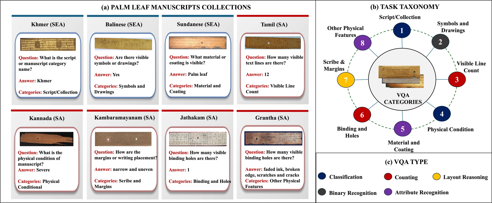
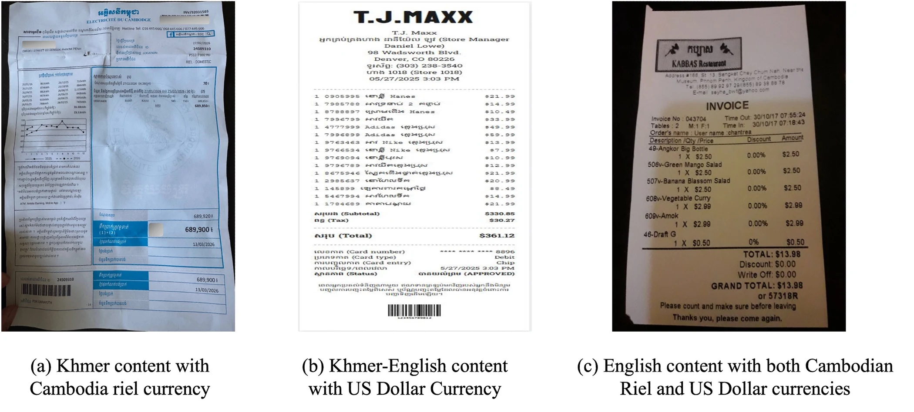
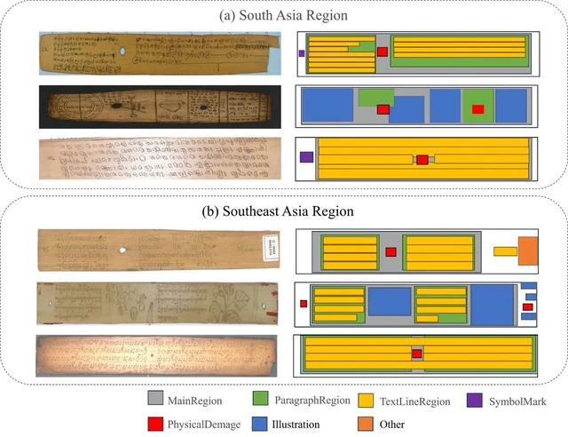
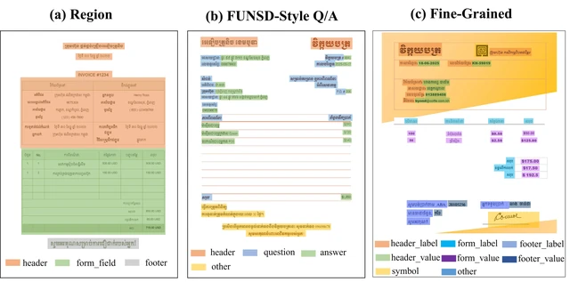
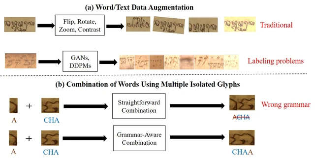
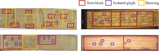
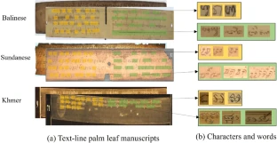
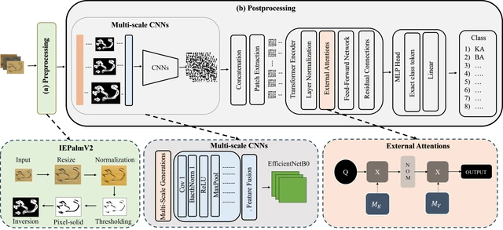
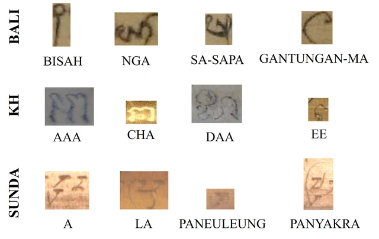
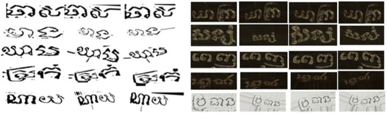

Angkorian-KSI benchmarks inscription analysis. Angkorian-HeritageObj studies visible condition and damage in Khmer stone heritage objects.
PERSONAL ACADEMIC WEBSITE / CAMBODIA
Nimol Thuon, PhD
Document intelligence.
Cultural memory.
Document Analysis · Computer Vision · Pattern Recognition
I study how machines read and understand documents, with a focus on low-resource languages and historical scripts. My work connects dataset creation, document AI, information retrieval, and digital heritage.
ABOUT
About me
Hello! I work on document analysis and low-resource document processing, from document information access to the study of historical writing.
From 2011 to 2016, I led research and development on a Khmer Semantic Search Engine and an Open Educational Resources system, including ontology development, document processing, and retrieval. This work was supported by the Institute of Technology of Cambodia (ITC), the Ministry of Education, Youth and Sport (MoEYS), the University of Mons, and ARES research funding in Belgium.
From 2018 to 2025, I expanded into historical document analysis: dataset creation, layout analysis, enhancement, classification, and text recognition. PALM-SEA began with Southeast Asian manuscripts; PALM-GLOBAL extended the work across South and Southeast Asia. The collections include Khmer, Balinese, Sundanese, Tamil, Malayalam, and the Kambaramayanam manuscript tradition.
These projects involved collaborations with the University of Science and Technology of China (USTC), the Chinese Academy of Sciences (CAS), Tsinghua University, iFlytek Research, The World Academy of Sciences in Italy, and FAU Erlangen-Nürnberg in Germany.
Since 2025, collaborations with researchers in Cambodia, NERC-SLIP in China, and Université Paris Cité in France have extended this programme to ancient Khmer stone inscriptions (6th–16th centuries) and heritage analysis. The related papers and resources are collected within the Ancient Khmer Stone Inscription Analysis project.
Alongside historical scripts, I study multimodal analysis of modern non-Latin documents in Khmer, Burmese, Lao, Chinese, and Japanese. My interests include datasets for underexplored documents, layout analysis, OCR, VQA, and LLM-based document understanding. Current public work includes KH-FUNSD and the VQA studies, with additional research continuing.
I remain eager to learn from experts and gain new experience. I warmly welcome researchers who would like to discuss ideas or explore collaborations.
RESEARCH
Research projects
My work spans modern documents, historical manuscripts, information retrieval, and educational systems. Each project page contains its research details and related papers.
Layout analysis and multimodal understanding for low-resource documents. The project page brings together KH-FUNSD, PalmLeaf-VQA, and the Khmer document VQA pilot.
PALM-LAY studies manuscript layout. PalmLeaf-VQA asks how well multimodal models understand preservation cues, physical features, and page structure.
Document analysis and recognition for Khmer, Balinese, and Sundanese palm-leaf manuscripts, including datasets, enhancement, layout, glyph classification, and text recognition.
KSE-Web extends the Khmer search programme with an analysis of lexical, dense, and hybrid retrieval, alongside LLM-assisted query expansion.
Research and development of an Open Educational Resources platform and complex document management systems, including a national Financial Document Management system.
PUBLICATIONS
Papers & preprints
Recent work and the earlier publications featured on my academic profile.
2027

WACV 2027 · Florida, USA · IEEE/CVF
PalmLeaf-VQA: A Multi-Script Visual Question Answering Benchmark for Historical Palm-Leaf Manuscript Understanding Across Diverse Regions
Nimol Thuon, Jun Du, Panhapin Theang
2026

ICPR 2026 · Lyon, France · Springer
Do MLLMs Really Understand Low-Resource Khmer Documents? A Pilot Study on Khmer Document VQA
Nimol Thuon, Panhapin Theang
2026

ICDAR 2026 · Vienna, Austria · Springer
KSE-Web: An Analysis of Hybrid Retrieval and LLM-Assisted Query Expansion for Low-Resource Khmer Semantic Search
Nimol Thuon
2026Online

ICDAR 2026 · Vienna, Austria · Springer
Angkorian-KSI: A Multi-task Benchmark for Khmer Stone Inscription Analysis
Nimol Thuon, Jun Du, Ranysakol Thuon, Panhapin Theang
2026

ICPR 2026 · PRESTIGE · Lyon, France
Angkorian-HeritageObj: AI-Assisted Visual Condition Assessment of Khmer Stone Heritage Objects
Nimol Thuon, Panhapin Theang
2026Online

ICDAR 2025 · Wuhan, China · Springer
PALM-LAY: A Multi-script Cross-Regional Dataset for Layout Analysis of Palm Leaf Manuscripts
Nimol Thuon, Jun Du, Panhapin Theang, Ratana Thuon
2025

APSIPA ASC 2025 · Singapore · IEEE
KH-FUNSD: A Hierarchical and Fine-Grained Layout Analysis Dataset for Low-Resource Khmer Business Document
Nimol Thuon, Jun Du
2025

Pattern Recognition Letters · Elsevier
Multi-low resource languages in palm leaf manuscript recognition: Syllable-based augmentation and error analysis
Nimol Thuon, J. Du, P. Theang, R. Thuon
2025

IJDAR · Springer · Presented in Wuhan, China
A Low-Intervention Dual-Loop Iterative Process for Efficient Dataset Expansion and Classification in Palm Leaf Manuscript Analysis
Nimol Thuon, J. Du, P. Theang, R. Thuon
2024

IJDAR · Springer · Presented in Athens, Greece
Generate, transform, and clean: the role of GANs and transformers in palm leaf manuscript generation and enhancement
Nimol Thuon, J. Du, Z. Zhang, J. Ma, P. Hu
2024

APSIPA ASC 2024 · Macau · IEEE
KhmerFormer: Multi-scale CNNs-Transformer with External Attention for Ancient Khmer Palm Leaf Isolated Glyph Classification
Nimol Thuon, J. Du
2022

ICFHR 2022 · Springer
Improving Isolated Glyph Classification Task for Palm Leaf Manuscripts
Nimol Thuon, J. Du, J. Zhang
2022

APSIPA ASC 2022 · IEEE
Syllable Analysis Data Augmentation for Khmer Ancient Palm leaf Recognition
Nimol Thuon, J. Du, J. Zhang
ACADEMIC ACTIVITIES
Services & activities
Invited talks & Keynote
Khmer Inscriptions and Ancient Heritage Analysis for Digital Preservation
INSA Lyon · France
eHeritage for Asian scripts
Université Paris Cité · France
AI for Digital Humanities in SEA
National University of Singapore · Singapore
AI Integration in Cultural Heritage
Kyoto University · Japan
Cultural Heritage Initiatives in Developing Regions
University of Twente · Netherlands
TEACHING
Teaching
COURSE · 6178101
Introduction to Computer Vision
Computer vision concepts and key definitions, real-world applications such as autonomous driving, and hands-on OpenCV exercises.
Course materials ↗WRITING & DISCUSSION
Blog & articles
RECOGNITION
Honors & awards
Recognition, grants, and scholarships from my academic and technical work.
- 2026
Winner (Coach), National Chinese Cyber Security and AI Competition · Beijing, China
- 2025
Winner, 3MT · APISIPA Mainland China
- 2025
Finalist, 3MT · APISIPA Singapore
- 2023
Outstanding PhD Thesis for International Students
- 2023
IAPR Support Grant, Switzerland
- 2022
IEEE USTC Outstanding Young Researcher
- 2022
Scholarship grant, University of Twente
- 2020
Winner (Team), International European–China CTF Competition · Milan, Italy
- 2018
CAS-TWAS President’s Fellowship · Fully funded PhD scholarship, China
- 2018
Erasmus+ PhD Scholarship · Köln, Germany
- 2018
Winner, China C9 (Top 9 Universities) CTF Competition · Shanghai
- 2017
Excellence Award for Innovative Technology · MoEYS
- 2015
Winner, ASEAN Cyber Security Competition · Singapore
CONTACT
Let’s exchange ideas.
I welcome research discussions and collaborations across document analysis, computer vision, information retrieval, and low-resource languages.